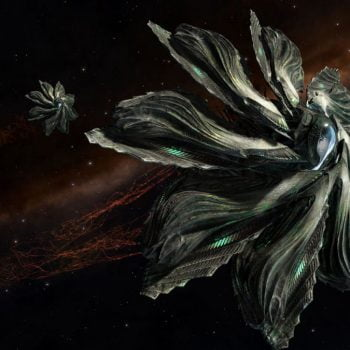

Following the short-running Professor Palin CG to gather Unknown Wake Data leading to the discovery of an apparent battle between Unknown Ships and Federation assets at HIP 17044, a global message was received from Cmdr Edward Lewis, as follows:
This is an urgent message from Commander Edward Lewis.
There are forces out there that don’t want you to know the truth, but I have to make this public.
I found a ship in HIP 17044. A Federal cap ship, shot to pieces. They were carrying the data the Feds stole from Professor Palin. The crew is dead, but they discovered something important about the Unknown Ships.
There’s beacon in the wreckage broadcasting a message, over and over.
It proves what we suspected. They’re back. And the whole galaxy needs to know. The Thargoids have returned.
